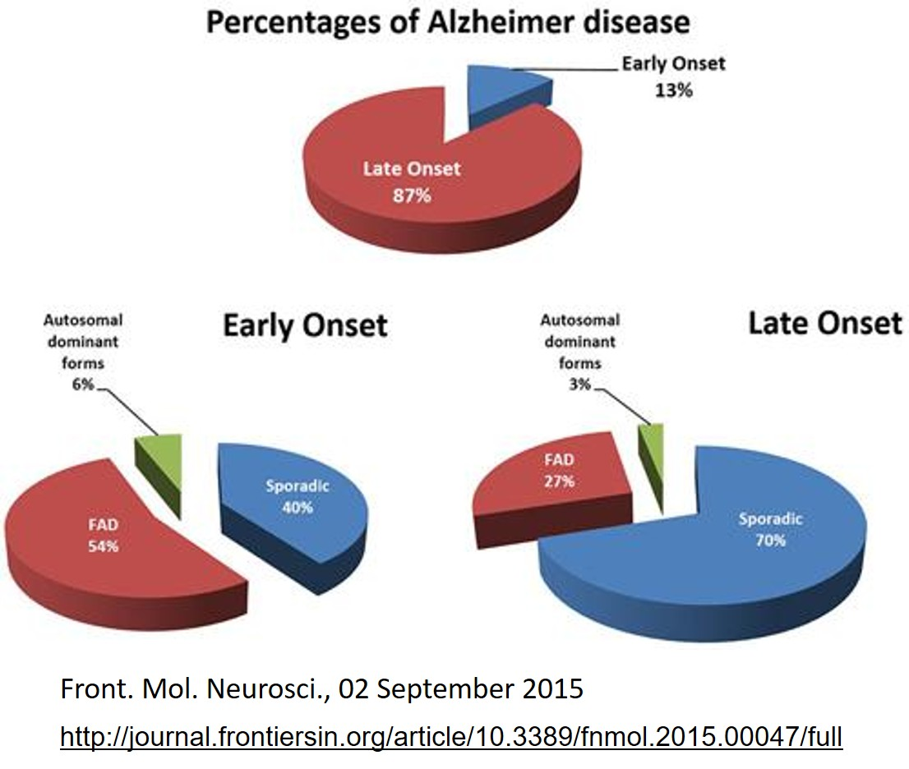
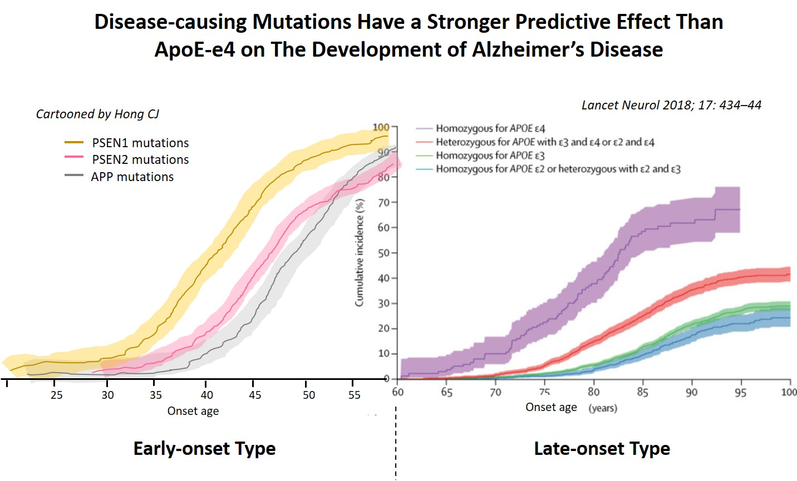
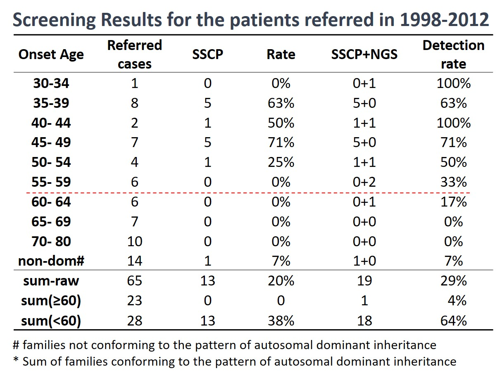
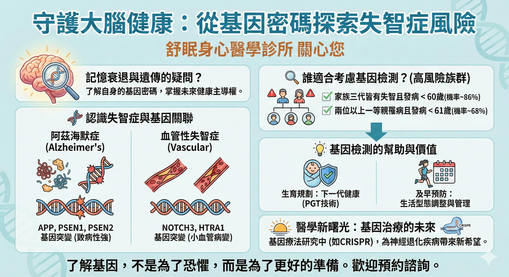

「醫師，我爸爸有失智症，我以後是不是也會得？」
在門診中，這幾乎是每一位帶著長輩來看診的家屬，心中最深層的擔憂。看著摯愛的親人漸漸遺忘一切，無力感往往會轉化為對自身未來的焦慮。今天，我們就從醫學與基因科學的角度，來攤開這個議題：失智症真的會遺傳嗎？究竟是哪些「基因突變」在背後搗蛋？
一、失智症不是只有一種：找對源頭很重要
首先要釐清的是，「失智症」是一個統稱，它其實包含了幾種完全不同的類型：
- 退化性失智症： 這是最常見的類型，包含阿茲海默症、額顳葉型失智，以及路易氏體失智症。
- 血管性失智症： 由於腦中風或慢性腦血管病變，造成腦部血液循環不良，導致腦細胞死亡而引起智力減退。值得注意的是，即便是血管性失智症也有遺傳的可能，例如 NOTCH3 基因突變會導致 CADASIL，進而引發中風與血管性失智。
- 其他原因引起： 包含腦外傷、感染、腫瘤、水腦、缺乏維他命、甲狀腺功能低下或長期酗酒等。

▲ 圖：不同年齡發病的失智症，其背後的原因比例大不相同。
二、發病年齡是關鍵：「60歲」的重要分水嶺
要評估失智症是否與「基因遺傳」高度相關，醫學上最重要的指標就是「發病年齡」。

▲ 圖：基因突變造成的失智症大多在 60 歲之前發病，而 APOE4/4 基因型則幾乎在 65 歲之後。
早發型(Early-onset)失智症（小於60歲發病）
由特定「致病基因突變」造成的失智症，大多在 60 歲之前就已經發病。這類年輕型失智症，與遺傳的關聯性極強。在過去 20 年針對早發型失智症病人的臨床研究中，我發現最常見的致病基因是 PSEN1 突變。事實上，早在 1998 年，我們團隊就找到了台灣第一個因為 PSEN1 突變而罹患失智症的家族。
晚發型(Late-onset)失智症（大於65歲發病）
相對地，高齡發病的失智症多半與環境、老化及生活習慣有關。從上述數據可以清楚顯示，即便是帶有最強風險基因 ApoE4/4 的人，幾乎也都在 65 歲之後才發病。這告訴我們，晚發型失智症並非單純由絕對的致病突變引起。有趣的是，科學家也發現，如果擁有 APOE2 基因同合子（APOE 2/2）的人，罹患阿茲海默症的機率反而極低。
三、到底要不要做基因檢測？看數據說話
「預測性的基因檢測對個人生命有極大的影響」。很多人會陷入「到底該不該驗」的焦慮。根據我多年的研究成果，並與國際上的研究文獻高度一致：60 歲是分辨早發型或晚發型失智症的重要分水嶺。只有在 60 歲之前發病的失智症，加上明確的家族史，才有較高的機率會找到致病的突變基因。

▲ 表：不同發病年齡與家族史，尋獲致病突變的機率比較。
- 如果您家族中連續三代都有人發病，且發病年齡都小於 60 歲，那麼找到致病基因突變的機率高達 86%。
- 但如果您的長輩是在 65 歲以後才出現症狀，即使有兩位以上的一等親發病，找到特定致病突變的機率其實小於 1%。
💡 醫師建議： 對於高齡發病者的家屬，我們通常建議放下基因檢測的焦慮，將重心放在預防與健康的生活調理上。
📊 點擊圖解：守護大腦健康，從基因密碼探索失智症風險

（點擊圖片可放大查看）
四、未來的希望之光：基因治療的突破
許多人害怕基因檢測的原因是：「就算驗出來，現在又不能治。」但隨著醫療科技的進步，這個觀念正在被打破。截至 2024 年底，全球已核准上市的基因療法約有 32 項，開發中的產品更超過 2,000 項。這不是科幻小說，而是已經發生在我們身邊的現實：
- 在台灣，治療嚴重罕見疾病「脊髓性肌肉萎縮症（SMA）」的基因治療藥物（如諾健生 Zolgensma）已獲核准並納入健保，讓病童有機會重新掌控身體。
- 針對遺傳性的「亨丁頓舞蹈症」，最新的 AMT-130 基因治療試驗顯示，高劑量組的疾病進展在 36 個月內減緩了約 75%，這是前所未見的里程碑。
- 針對阿茲海默症，目前也有團隊正利用 CRISPR 基因編輯技術，試圖降低最強風險基因 APOE-e4 的影響。
🩺 洪醫師的結語
如果您對家族的失智症病史感到擔憂，請不要獨自承受。在「舒眠身心醫學診所」，我們重視詳細的病史分析。讓我們透過科學的數據與同理的評估，陪您釐清究竟是自然的衰老，還是需要關注的遺傳風險，一起解開健康的迷霧。